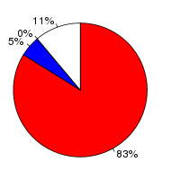
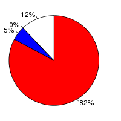

Hordeum vulgare (Hordeum vulgare, 030312v2) and Triticum aestivum (Triticum aestivum, IWGSP1) were aligned using the Translated Blat alignment algorithm (Kent W, Genome Res., 2002;12(4):656-64) in Ensembl release 76. Hordeum vulgare was used as the reference species. After running Translated Blat, the raw Translated Blat alignment blocks are chained according to their location in both genomes. During the final netting process, the best sub-chain is chosen in each region on the reference species.
Full list of pairwise alignments| Minimum score (minScore) | 30 |
| Database type (t) | dnax |
| Query type (q) | dnax |
| Mask out repeats (mask) | lower |
| Mask out repeats on query (qmask) | lower |
| Hordeum vulgare | Triticum aestivum | |
|---|---|---|
| Chunk size | 200,100,000 | 200,100,000 |
| Overlap | 10,000 | 10,000 |
| Group set size | 400,100,000 | 400,100,000 |
| Masking options | {default_soft_masking => 1} | {default_soft_masking => 1} |
Number of alignment blocks: 2902234
| Genome coverage(bp) | Coding exon coverage (bp) | |
|---|---|---|
| Hordeum vulgare |
|
 |
| 175,026,891 out of 4,706,173,842 | Matches: 23,008,332 out of 27,670,405 | |
| Uncovered: 4,531,146,951 out of 4,706,173,842 | Mis-matches: 1,480,480 out of 27,670,405 | |
| Insertions: 38,571 out of 27,670,405 | ||
| Uncovered: 3,143,022 out of 27,670,405 | ||
| Triticum aestivum |
|
 |
| 423,284,874 out of 4,460,951,632 | Matches: 70,787,953 out of 85,832,889 | |
| Uncovered: 4,037,666,758 out of 4,460,951,632 | Mis-matches: 4,411,092 out of 85,832,889 | |
| Insertions: 62,541 out of 85,832,889 | ||
| Uncovered: 10,571,303 out of 85,832,889 |